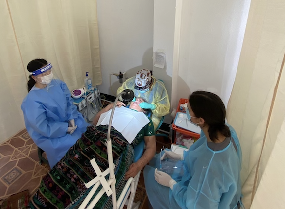
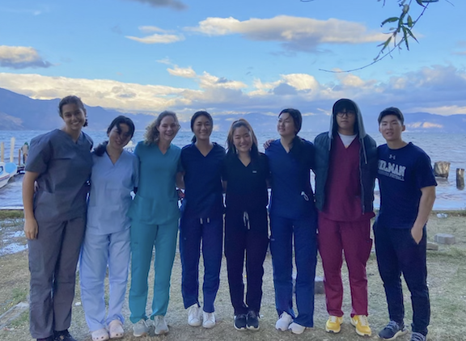
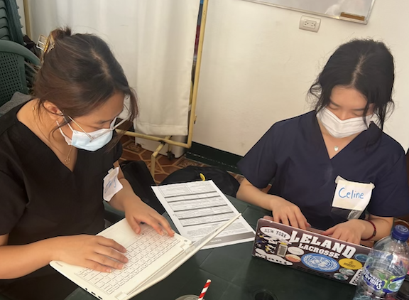
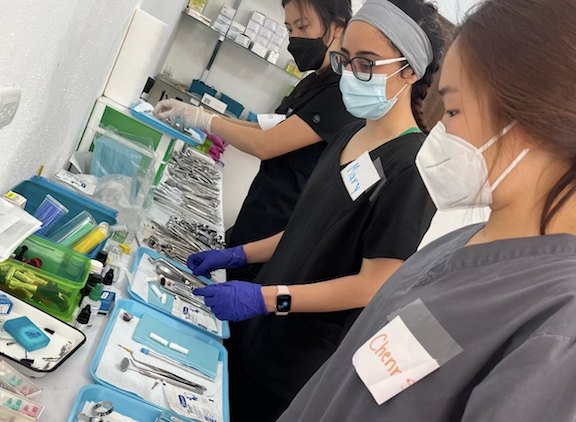

Increased the organization’s presence within the local community through weekly social media posts and stories
Managed social media posts, stories, and newsletters, and curated posts to those looking to get involved in
the
mission
Developed fundraising strategies and created graphics for social media pages to advertise fundraising
initiatives
Planned finances for a dental missions trip to Guatemala by communicating goals and objectives to the
community

VAW members working alongside local dentists

Our VAW Cornell team

VAW members logging patients charts

VAW members sterilizing tools after treatments